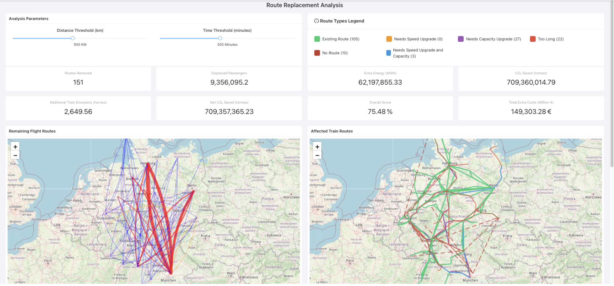
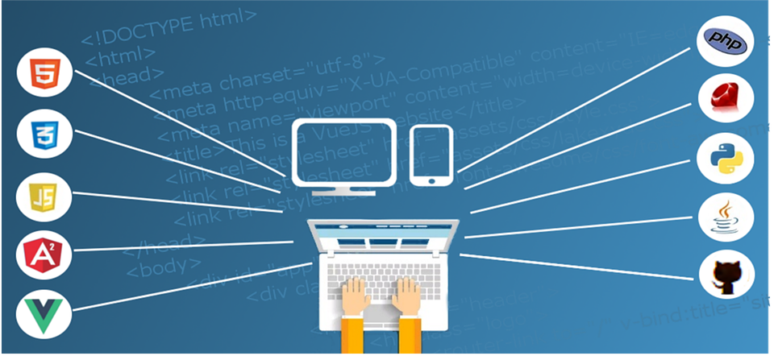
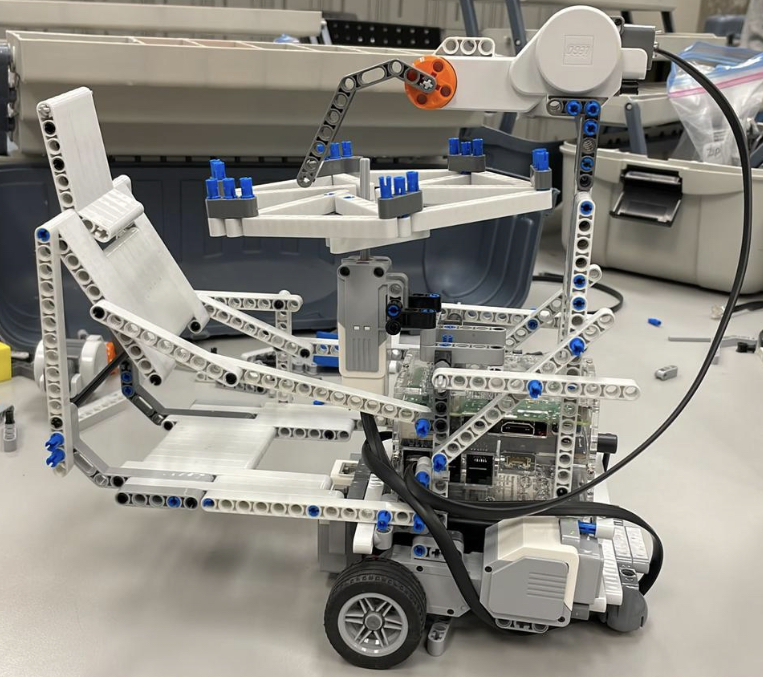

About Me
I am Sameer Karam, a Computer Engineering student at McGill University. My passion for technology and problem-solving has driven me to pursue a career in software development and engineering. With a solid foundation in programming languages, data structures, and hardware systems, I continuously seek opportunities to apply my knowledge and creativity to real-world challenges.
Throughout my academic journey, I've developed expertise in various areas of computer engineering, from software development and machine learning to computer vision and full-stack development. I'm particularly interested in projects that combine innovative technology with real-world impact, as demonstrated through my work in medical imaging analysis and sustainable transportation solutions.
Professional Experience

Software Developer Intern
Jaffa.Net, Ramallah, Palestine | July 2023 – August 2023
- Designed and developed dynamic and responsive web pages using HTML, CSS, and JavaScript, ensuring cross-browser compatibility and enhancing user experience with visually appealing interfaces.
- Customized and optimized a comprehensive restaurant management application in Java, implementing features such as order processing, inventory management, and user authentication, significantly improving operational efficiency.
- Collaborated with a team of developers to integrate third-party APIs and enhance application functionality.
- Conducted thorough testing and debugging to ensure the software's reliability and performance, reducing bugs by 20%.
- Strengthened my proficiency in Python by solving advanced data structures and algorithmic problems on competitive programming platforms.
- Participated in Agile development processes, including sprint planning, daily stand-ups, and retrospectives.
- Presented project updates and technical findings to senior management and stakeholders.
Projects

High-Speed Rail Simulation Platform
Python, FastAPI, React, Plotly, TailwindCSS | Sept 2024 – Apr 2025
- Designed and implemented a full-stack simulation platform to analyze the feasibility of replacing short-haul domestic flights in Germany with high-speed rail, targeting national CO₂ emissions reduction.
- Developed backend preprocessing pipelines for large-scale transport datasets using Python, applying geospatial filtering, emissions modeling, and route-level passenger estimations.
- Built an interactive frontend using React and Plotly to visualize key metrics across customizable scenarios.
- Created simulation models to assess air-to-rail substitution feasibility based on emissions, capacity, frequency, and travel time tradeoffs.
- Validated simulation outputs against real-world benchmarks and delivered comprehensive technical documentation.
Tumor Detection System
Python, OpenCV, scikit-learn | Winter 2025
- Developed a complete computer vision pipeline for segmenting, detecting, and counting tumors in digital pathology images.
- Implemented both unsupervised (K-means clustering with DICE coefficient evaluation) and supervised segmentation (SVM-based pixel classification) approaches.
- Designed a candidate-region detection framework using HoG and ORB features for tumor classification (~80% accuracy) and an SVR model for counting.
- Utilized Python with OpenCV and scikit-learn to build, evaluate, and visualize the solution.

Machine Learning Chess Engine
Neural Networks, Python | May 2024 – Present
- Currently engaged in building and training a neural network specifically for the game of chess, aiming to implement AlphaZero's reinforcement learning capabilities.
- Working on integrating Monte Carlo Tree Search (MCTS) to enhance the efficiency of policy planning and decision-making.
- Utilizing Python for the development and implementation of advanced algorithms.
Hotel Management Web Application
Java, HTML, CSS, JavaScript, PostgreSQL, React | September 2023 – December 2023
- Designed and implemented a user-centered interface with React and Material-UI.
- Developed a robust PostgreSQL database system integrated with Hibernate ORM.
- Conducted thorough testing using JUnit to ensure application stability.
- Facilitated team collaboration and project management using GitHub within an Agile framework.


Fire-Extinguishing Robot
BrickPi, Raspberry Pi, Python, LeoCAD | September 2023 – December 2023
- Developed an autonomous fire-extinguishing robot to enhance firefighter safety and efficiency.
- Integrated hardware and software using BrickPi and Raspberry Pi, programmed in Python.
- Created a navigational system capable of autonomously detecting and suppressing fires.
Skills
Programming Languages
Java Python C C# JavaScript CSS HTML VHDL ARM Assembly
Technologies
Eclipse IntelliJ Visual Studio Microsoft Office Unity SpringBoot Gradle
Soft Skills
Team Collaboration Problem Solving Communication Time Management Leadership
Languages
Arabic (Native) English (Fluent) French (Beginner)
Get In Touch
Thank you for taking the time to explore my portfolio. If you have any questions about my work, are interested in collaboration opportunities, or have potential job offers, I would love to hear from you. Feel free to reach out through any of the contact methods listed below.
- Phone: +1-(514)-(8841)
- Email: sameer.karam@mail.mcgill.ca
- LinkedIn: linkedin.com/in/sameerkaram
- GitHub: github.com/Samraa66